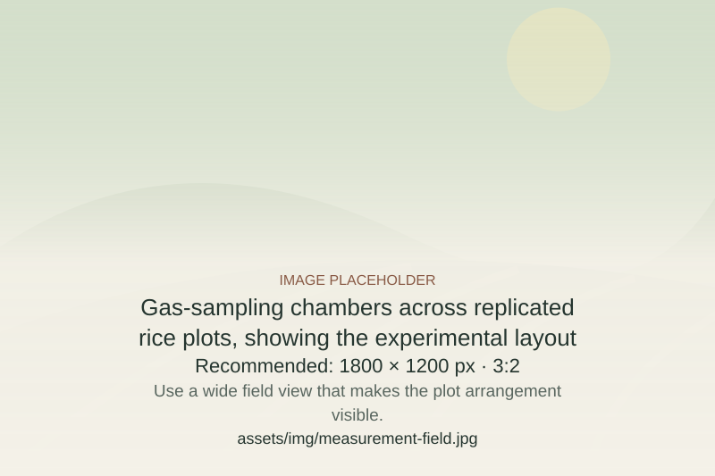
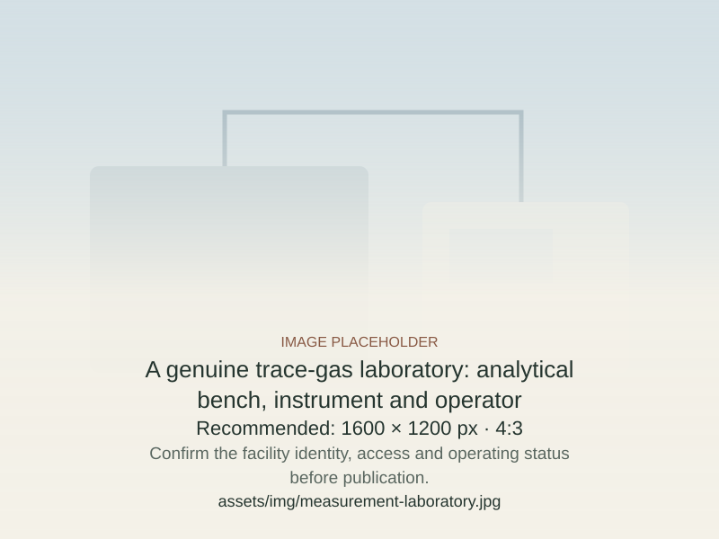
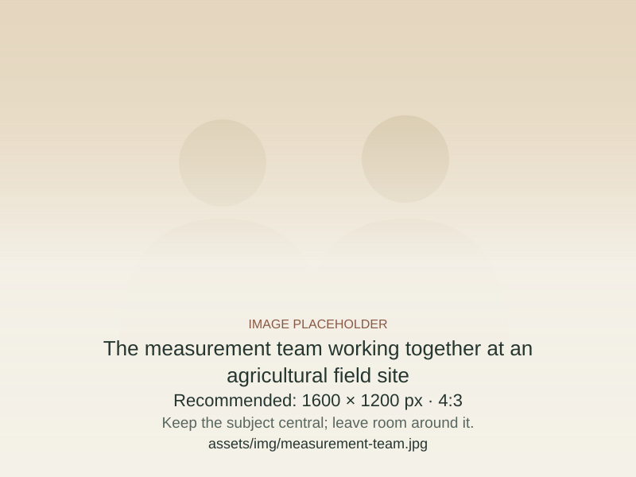

Experimental design & setup
Define representative sites, reference and intervention plots, replication and sampling schedules. Support chamber deployment and the laboratory arrangements needed for the agreed programme.
Measure GHG
Comprehensive field-to-analysis measurement support for agricultural project developers, researchers and implementation teams.
The complete picture
Agricultural measurement has often focused on methane, particularly when evaluating water-management changes in rice paddies. Nitrous oxide brings a different experimental and analytical challenge—and should not be treated as an afterthought.
Our approach brings both gases into the same measurement programme, so that interventions are assessed through their combined emissions evidence rather than a methane result alone.
For carbon projects, the measurement plan must also meet the applicable methodology and project requirements.

What we do
Engage us for an end-to-end programme or for defined setup, training and analytical support. The scope, responsibilities and delivery arrangements are agreed for each project.
Define representative sites, reference and intervention plots, replication and sampling schedules. Support chamber deployment and the laboratory arrangements needed for the agreed programme.
Support field-team preparation, sample collection, handling and analysis for methane and nitrous oxide. Sampling frequency is determined by the experiment and expected emission dynamics.
Compile field and analytical records, calculate fluxes, review quality flags and bring seasonal datasets together with explicit assumptions and limitations.
How we work
Agree the crop systems, sites, interventions, seasons, reporting purpose and responsibilities.
Translate the question into experimental plots, chamber systems, sampling protocols and analytical arrangements.
Collect samples and field metadata; document handling, analysis and quality checks.
Calculate fluxes, compare treatments and synthesise multi-season results with their uncertainty.
Deliverables

The deliverables are scoped to the project. Measurement evidence supports project development; it does not itself constitute carbon-credit issuance, third-party validation or certification.
Experience through evidence
Published in Carbon Management. The paper documents sampling and analytical approaches for measuring methane and nitrous oxide in tropical rice and upland systems.
Read the publication ↗This establishes historical research experience. It is not presented as certification of BESTSOL or a claim about the current status of every laboratory.
Who we work with
Design field comparisons and measurement programmes that support emissions quantification and project documentation.
Connect experimental design with sampling, analysis and interpretable seasonal results.
Prepare teams, establish workable protocols and connect measurements with agricultural practice.
India and beyond
Our ambition is to help smallholder agricultural systems in India and internationally build the evidence needed to participate in credible carbon projects.
We welcome collaboration on rice and other agricultural systems. Share the location, crop, intervention, proposed season and whether you need full measurement delivery or specific setup and training support.

Start a conversation